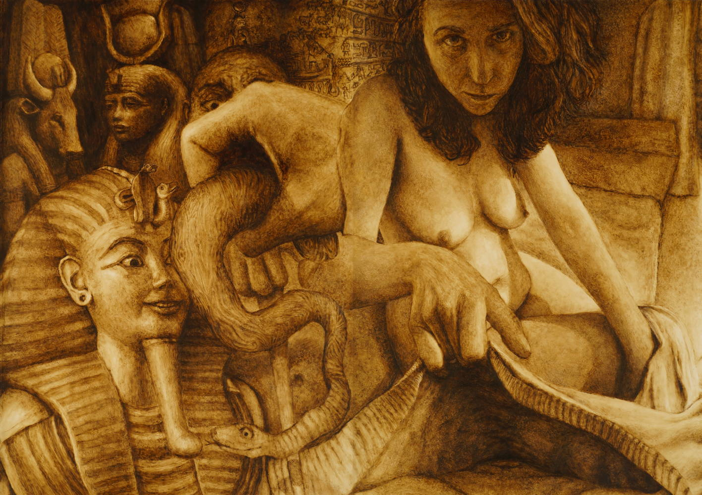

Project Story
Half a decade ago I began working in complete solitude on a long horizontal painting project that reinterprets the founding story of my culture. In this project I strived for an innovative contemporary Jewish representation of the ancient biblical myths, as a reaction to Christian representation.
Inside the Jewish Myth
Jewish minority culture did not participate in the European figurative interpretation project of its own great myths by the old masters. This project tries to offer an intimate figurative representation of the Jewish myths - from within. The models for the figures in the painting sequence are family members, former spouses and myself.
Evolution of the Work
I worked on the paintings in the order of the narrative's progress from right to left (as in Hebrew writing). As the years went by, the project took the form of a diary or a record of an evolution process that methodically explores new painting angles. Each painting (1m X 0.7m) in the sequence also stands fully on its own as a complete image, but at the same time the viewer's experience is also developed through physically walking along the evolving visual narrative. The narrative interweaves the dramatic biblical story, a chronicle of my artistic development and a formulation of a fresh visual language, in which the viewer becomes a figure in the scene.
Technique
The painting was done in asphalt - an extremely foul-smelling, dirty, coarse and unhealthy material, but - similar to a sewer cleaner - I stopped smelling it after the first few months. I felt that this medium gave the heavenly and mythical themes a materialized and earthly presence, yet at the same time was also respectful and distant. My intention was to reinterpret these cardinal themes in the history of painting with a contemporary eye, without eliminating their mythical element, nor ridiculing it.
Future Plans
In my more optimistic days, I feel that the project aspires to return to the origins of painting, both in its scale and in thematic significance, and to revive them according to 21ˢᵗ-century perception. I intend to continue the painting sequence chronologically. Next in line is the Greek world, after that, the evolution of the monotheistic religions, moving onward through history to modern times, further into present day and later reaching beyond into the future. I consider this painting to be my major life's work so I intend to expand it for years to come.
